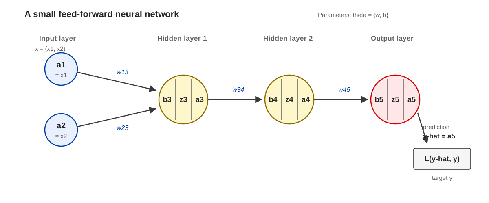

Backpropagation
Introduction
Consider the small feed-forward network below. The input is a two-dimensional sample $\mathbf{x} = (x_1, x_2)$, represented by the first activations $a_1 = x_1$ and $a_2 = x_2$.

Each non-input unit first forms a weighted sum with a bias, then applies the activation function $g$: \[ \begin{aligned} z_3 &= w_{13} a_1 + w_{23} a_2 + b_3, & a_3 &= g(z_3), \\ z_4 &= w_{34} a_3 + b_4, & a_4 &= g(z_4), \\ z_5 &= w_{45} a_4 + b_5, & a_5 &= g(z_5). \end{aligned} \] Here, $z_j$ is the output of the linear sum before applying $g$, while $a_j$ is the output of the activation function. For this simple network, the weight and bias vectors are \[ \boldsymbol{w} := \begin{bmatrix} w_{13} \\ w_{23} \\ w_{34} \\ w_{45} \end{bmatrix}, \qquad \boldsymbol{b} := \begin{bmatrix} b_3 \\ b_4 \\ b_5 \end{bmatrix}. \] The network forms function that maps the input $\mathbf{x}$ to the output prediction $\hat{y} = a_5 = f_{\boldsymbol{w},\boldsymbol{b}}(\mathbf{x})$, which is compared with the target $y$ using the loss $\mathcal{L}(f_{\boldsymbol{w},\boldsymbol{b}}(\mathbf{x}), y)$. Backpropagation applies the chain rule from the loss back through the network to compute derivatives with respect to every weight and bias.
Gradients of $w_{13}$ and $w_{34}$
Consider the longest chain-rule gradient in this example: \[ \definecolor{deltaThree}{RGB}{255,235,215} \definecolor{deltaFour}{RGB}{255,250,210} \definecolor{deltaFive}{RGB}{216,239,250} \begin{aligned} \frac{\partial \mathcal{L}}{\partial w_{13}} &= \colorbox{deltaThree}{$\displaystyle \underbrace{\colorbox{deltaFour}{$\displaystyle \colorbox{deltaFive}{$\displaystyle \underbrace{ \frac{\partial \mathcal{L}}{\partial a_5} \frac{\partial a_5}{\partial z_5} }_{\displaystyle := \delta_5}$} \frac{\partial z_5}{\partial a_4} \frac{\partial a_4}{\partial z_4}$} \frac{\partial z_4}{\partial a_3} \frac{\partial a_3}{\partial z_3}}_{\displaystyle := \delta_3}$} \underbrace{\frac{\partial z_3}{\partial w_{13}}}_{=a_1}. \end{aligned} \]
Then consider a shorter chain rule, we can notice most of this chain overlaps with the above longer chain. Therefore we can reuse the same computation to efficiently compute all the gradients. \[ \definecolor{deltaFour}{RGB}{255,250,210} \definecolor{deltaFive}{RGB}{216,239,250} \begin{aligned} \frac{\partial \mathcal{L}}{\partial w_{34}} &= \colorbox{deltaFour}{$\displaystyle \underbrace{ \colorbox{deltaFive}{$\displaystyle \underbrace{ \frac{\partial \mathcal{L}}{\partial a_5} \frac{\partial a_5}{\partial z_5} }_{\displaystyle := \delta_5}$} \frac{\partial z_5}{\partial a_4} \frac{\partial a_4}{\partial z_4} }_{\displaystyle := \delta_4}$} a_3. \end{aligned} \]
In both cases, the gradient of an incoming weight is the error signal at the unit multiplied by the activation entering that weight.
Backward recursion
The recursion starts from the output unit and moves backward through the network: \[ \definecolor{deltaThree}{RGB}{255,235,215} \definecolor{deltaFour}{RGB}{255,250,210} \definecolor{deltaFive}{RGB}{216,239,250} \begin{aligned} &\colorbox{deltaFive}{$\displaystyle \delta_5 := \frac{\partial \mathcal{L}}{\partial z_5} = \frac{\partial \mathcal{L}}{\partial a_5} g'(z_5)$}, \\ &\colorbox{deltaFour}{$\displaystyle \delta_4 := \frac{\partial \mathcal{L}}{\partial z_4} = \colorbox{deltaFive}{$\displaystyle \delta_5$} w_{45} g'(z_4)$}, \\ &\colorbox{deltaThree}{$\displaystyle \delta_3 := \frac{\partial \mathcal{L}}{\partial z_3} = \colorbox{deltaFour}{$\displaystyle \delta_4$} w_{34} g'(z_3)$}. \end{aligned} \]
In plain words
Here $\delta_j$ is not the Dirac delta function; it is an error signal. It measures how much the final loss changes if the pre-activation $z_j$ is increased slightly. Its sign tells whether increasing $z_j$ raises or lowers the loss, and its magnitude tells how strongly that unit is responsible for the current error. Backpropagation starts from $\delta_5$ at the output, then transfers that error backward through each weight and activation slope to obtain $\delta_4$ and $\delta_3$.
A note on $\delta$ conventions
Some texts instead define the error signal with respect to the activation rather than the pre-activation: \[ \delta_j^{(z)} := \frac{\partial \mathcal{L}}{\partial z_j}, \qquad \delta_j^{(a)} := \frac{\partial \mathcal{L}}{\partial a_j}. \] Since $a_j = g(z_j)$, the two definitions satisfy \[ \delta_j^{(z)} = \delta_j^{(a)} g'(z_j). \] They yield exactly the same gradients when used consistently. The convention in this post, $\delta_j = \partial \mathcal{L} / \partial z_j$, gives the compact weight-gradient expression \[ \frac{\partial \mathcal{L}}{\partial w_{ij}} = \delta_j a_i. \] If $\delta_j$ is instead defined as $\partial \mathcal{L} / \partial a_j$, the equivalent formula retains the activation derivative explicitly: \[ \frac{\partial \mathcal{L}}{\partial w_{ij}} = \delta_j g'(z_j) a_i. \]